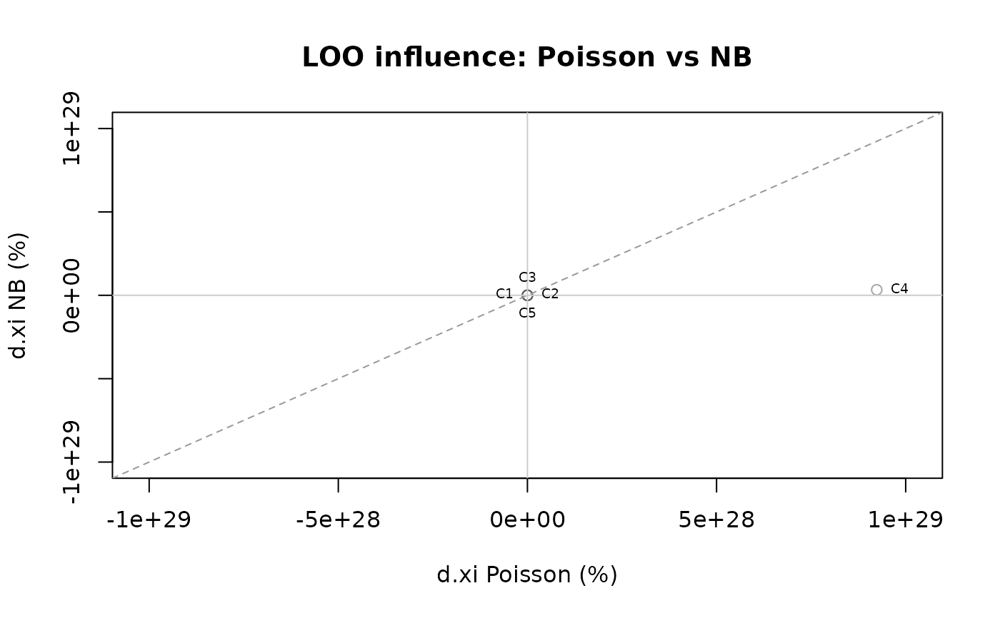
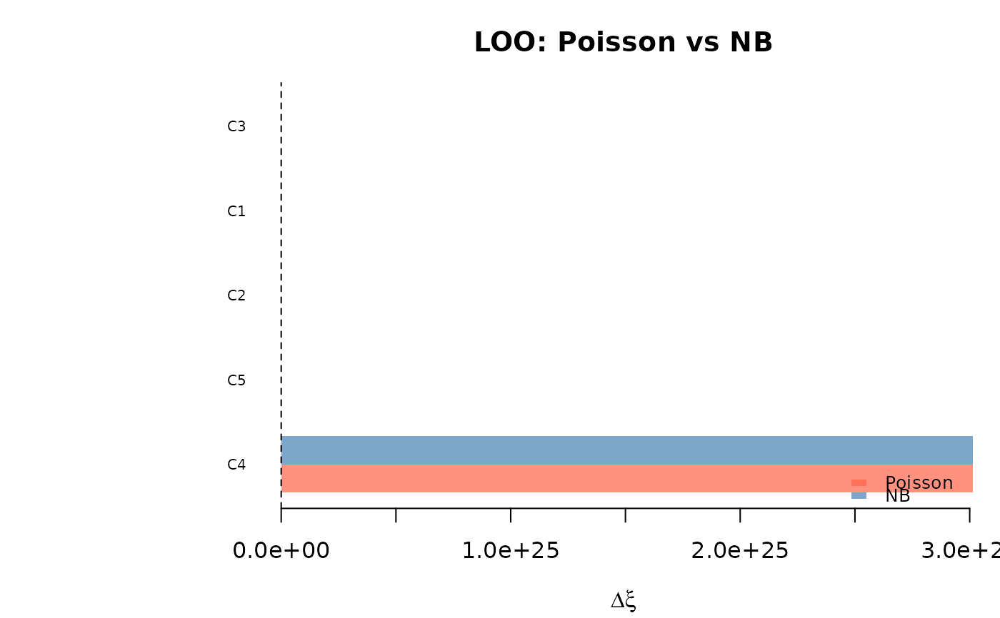

Takes two "uncounted_loo" objects and produces a comparison table
and diagnostic plots showing how each observation/country influences
the two models differently.
Usage
compare_loo(
loo1,
loo2,
labels = c("Model 1", "Model 2"),
data = NULL,
label_vars = NULL
)Arguments
- loo1
An
"uncounted_loo"object (first model).- loo2
An
"uncounted_loo"object (second model).- labels
Character vector of length 2 with model names. Defaults to
c("Model 1", "Model 2").- data
Optional data.table/data.frame with columns matching
loo1$droppedidentifiers. If provided and LOO is by"obs", columns namedlabel_varsare used to create readable labels.- label_vars
Character vector of column names in
datato use for observation labels (e.g.,c("country_code", "year", "sex")).
Value
An object of class "uncounted_loo_compare" with components:
- table
Data frame sorted by influence, with columns:
dropped,label,dxi_<Model1>,pct_<Model1>,dxi_<Model2>,pct_<Model2>,max_abs_pct.- labels
Model labels.
- by
The LOO type (
"obs"or"country").- dxi_1, dxi_2
Raw \(\Delta\xi\) vectors for each model.
- pct_1, pct_2
Percentage \(\Delta\xi\) vectors.
- full_xi_1, full_xi_2
Full-model \(\hat{\xi}\) for each model.
Details
Purpose. When comparing two model specifications (e.g., Poisson vs NB, or different covariate sets), it is useful to check whether the same observations are influential under both models, or whether influence patterns diverge.
Scatter plot interpretation (4 quadrants). The scatter plot
(type = "scatter") shows \(\%\Delta\xi\) for Model 1 (x-axis)
vs Model 2 (y-axis). The four quadrants reveal:
Top-right (+, +): dropping this obs increases \(\hat{\xi}\) under both models (obs pulls estimate down in both).
Bottom-left (-, -): dropping this obs decreases \(\hat{\xi}\) under both models (obs pulls estimate up in both).
Top-left (-, +): divergent influence – obs pulls the estimate in opposite directions across models.
Bottom-right (+, -): same as top-left but reversed.
Points near the diagonal have similar influence under both models. Points far from the diagonal have divergent influence and warrant investigation.
Bar plot. The bar plot (type = "bar") shows the top N most
influential observations side by side for both models, ranked by
max(|pct_1|, |pct_2|).
Examples
# \donttest{
# Simulate synthetic data
set.seed(42)
n_obs <- 15
sim_data <- data.frame(
country = rep(paste0("C", 1:5), each = 3),
year = rep(2018:2020, 5),
N = rpois(n_obs, lambda = 500000),
n = rpois(n_obs, lambda = 1000),
m = rpois(n_obs, lambda = 50)
)
fit_po <- estimate_hidden_pop(
data = sim_data, observed = ~m, auxiliary = ~n,
reference_pop = ~N, method = "poisson",
countries = ~country
)
#> Warning: Some alpha values < 0 (min = -0.467). Consider using constrained = TRUE.
fit_nb <- estimate_hidden_pop(
data = sim_data, observed = ~m, auxiliary = ~n,
reference_pop = ~N, method = "nb",
countries = ~country
)
#> Warning: Some alpha values < 0 (min = -0.213). Consider using constrained = TRUE.
loo_po <- loo(fit_po, by = "country")
#> Warning: Some alpha values < 0 (min = -3.217). Consider using constrained = TRUE.
#> Warning: Some alpha values < 0 (min = -7.674). Consider using constrained = TRUE.
#> Warning: Some alpha values > 1 (max = 4.281). Population size estimates may be unreliable. Consider using constrained = TRUE or simplifying cov_alpha.
#> Warning: Some alpha values > 1 (max = 2.877). Population size estimates may be unreliable. Consider using constrained = TRUE or simplifying cov_alpha.
loo_nb <- loo(fit_nb, by = "country")
#> Warning: Some alpha values < 0 (min = -3.217). Consider using constrained = TRUE.
#> Warning: Some alpha values < 0 (min = -7.674). Consider using constrained = TRUE.
#> Warning: Some alpha values > 1 (max = 4.281). Population size estimates may be unreliable. Consider using constrained = TRUE or simplifying cov_alpha.
#> Warning: Some alpha values > 1 (max = 2.877). Population size estimates may be unreliable. Consider using constrained = TRUE or simplifying cov_alpha.
comp <- compare_loo(loo_po, loo_nb, labels = c("Poisson", "NB"))
print(comp)
#> LOO comparison: Poisson vs NB
#> Dropped by: country
#> Full xi -- Poisson : 0 | NB : 1
#>
#> Top 15 most influential (by max |%change|):
#> label dxi_Poisson pct_Poisson dxi_NB pct_NB max_abs_pct
#> C4 3.012532e+25 9.234739e+28 3.012437e+25 3.275959e+27 9.234739e+28
#> C5 2.996660e+17 9.186084e+20 2.996660e+17 3.258801e+19 9.186084e+20
#> C2 3.874090e+03 1.187578e+07 3.873200e+03 4.212019e+05 1.187578e+07
#> C3 -3.000000e-02 -1.000000e+02 -9.200000e-01 -1.000000e+02 1.000000e+02
#> C1 -3.000000e-02 -1.000000e+02 -9.200000e-01 -1.000000e+02 1.000000e+02
plot(comp, type = "scatter")

plot(comp, type = "bar")

# }